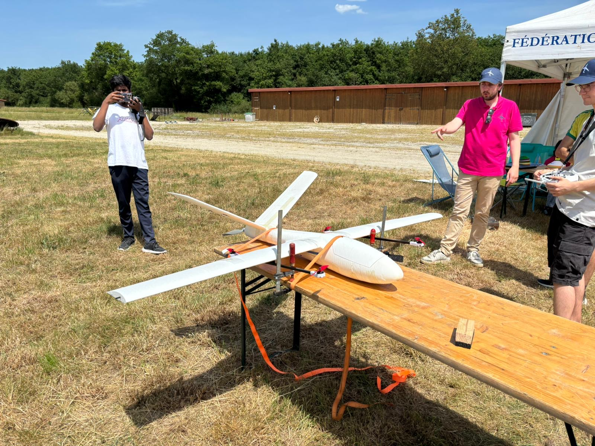
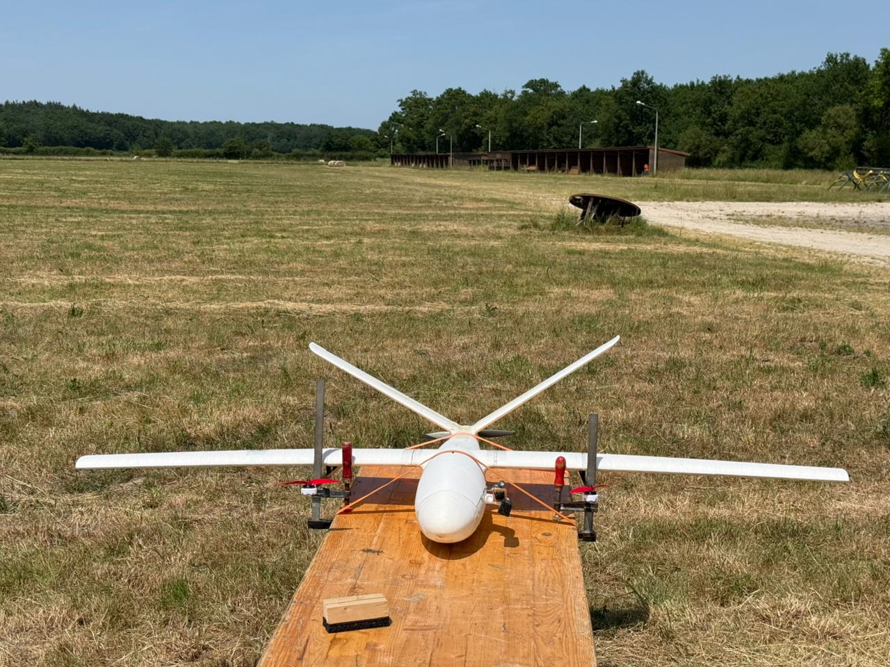
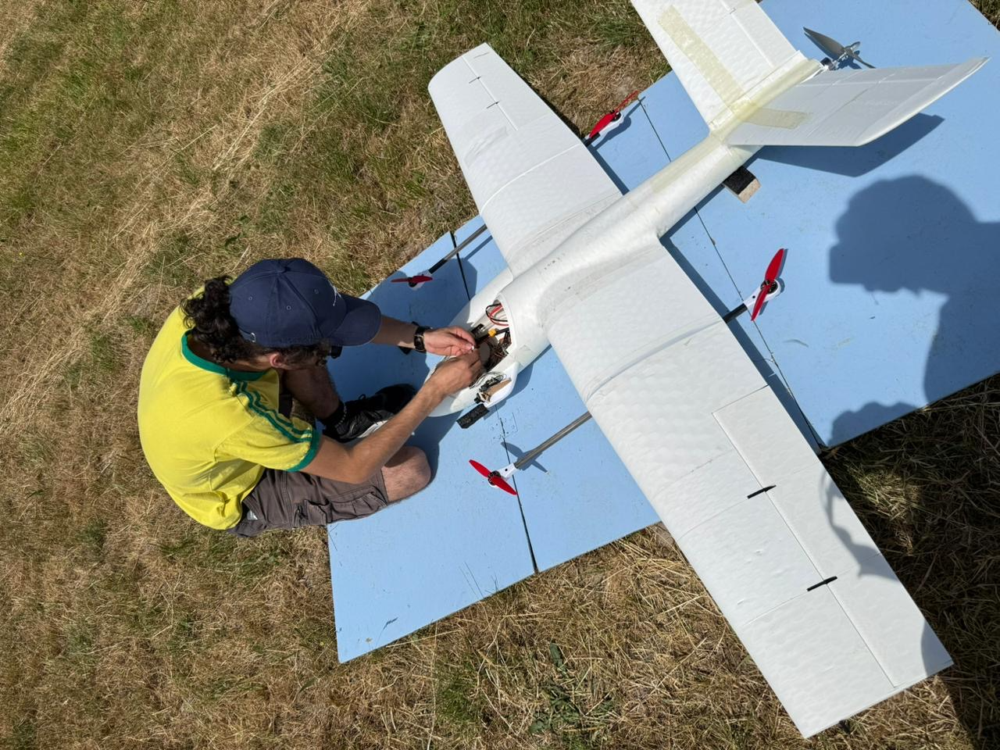

The goal
The Dassault UAV Challenge asks student teams to build a drone that can carry out a mission autonomously. The hard part isn't flying — it's making the aircraft understand what it sees and decide what to do without anyone guiding it.
We chose the demanding route: rather than buy a ready-made platform, we built the entire aircraft ourselves and wrote the software brain that turns a camera feed into autonomous decisions.
How it works
The drone runs a perception-to-action pipeline. Each stage hands off to the next, many times per second:
In plain terms: the camera streams images, an AI model spots the target in every frame, a tracker keeps it as the same target as it moves, the system turns its position on screen into real-world GPS coordinates, and the flight controller flies the mission accordingly — all driven by a small decision "brain" (a finite-state machine).
Before any real flight, the whole pipeline was validated in SITL simulation (software-in-the-loop), so the logic could be tested safely and repeatedly on the ground first.
My role
I led the perception and navigation stack: the real-time detection and tracking, the pixel-to-GPS targeting, the autonomous mission logic on ArduPilot/MAVLink, and the simulation testing. In short, the part that makes the drone autonomous rather than remote-controlled.
In pictures



What's next
Because we built the airframe in-house, full onboard integration is the focus of the next campaign — moving the whole perception pipeline onto the aircraft for end-to-end autonomy in flight.